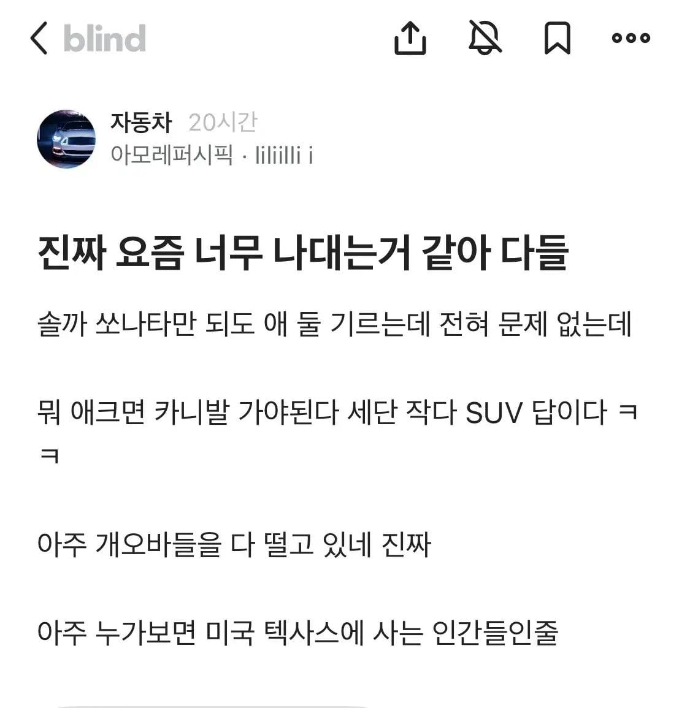

요즘 너무 나대는거 같아 다들
댓글
카니발이 있으면 좋지 짐도 사람도 넉넉하게
남한테 1960년대에 월세 단칸방서 애 둘 키웠다고 그거면 됐다고 하겠냐고.. 크면 편하고 좋으니까 추천하는거고 사는 놈이 본인 형편 맞춰서 사는거지
그래서 나는 K21을 타
애 셋 밑으론 쏘나타면 충분하다
ㄹㅇㅋㅋ
근데 나도 소나타 타보니까 어차피 대한민국 도로에선 차급 이 이상은 사치다 싶긴했어
카니발 너무 무거워
악셀밟아도 잘 안나가
근데 그렇게들 쏘는거야? 대단들하구만
카니발디젤 존나잘나감
가만보면 브레이크를 안밟는거임ㅋㅋ
3.5가솔린 모는데 스포츠 모드 넣음 몰라도 기본적으로 조또 안나감. 이런 느린차로
어케 난폭운전들을 할까 항상 의문이였는데..
아래보니 디젤은 잘나간다네.,
진짜 이런 글 보면 볼수록 내가 아이가 생기면 어찌 살아남을 수 있을까 싶음...
걱정마라 18년된 베라크루즈 삼백만원따리로도 잘살고있듬. 남들한테 휩쓸리지마
차 없이도 잘 키움
차 가지고 살아남는거 걱정할 필요 없다
애 둘은 그렇지...
근데 애 셋은 선택지가 없더라 ㅠㅠ
너는 인정. 애국자느님
애국자는 조용히 카니발을 사라
애국자는 카니발
그냥 바꾸고 싶은데 명분이 필요한거지
카니발 그 무겁고 굼뜬차를 대체 왜 타는거지
걍 suv가 낫지
애둘 이상이라면
베이비시트 해도 여유 공간있고.
끌어안은채로 슬라이딩도어 열기
뒤에는 유모차 왜건 +
개인 짐 가능한 차
슬라이딩도어가 존나큼
차량의 운동성능을 따지면,
맘 같아선 씨발
911 자동흡기로
조수석 시트 떼버리고 조금이라도 공차 중량 줄여 차 조지며 타고싶지.
절대 MPV, SUV는 거들떠도안봄.
이제 6주된 애기 하나도 카시트 하고 유모차 싣고 하면 소나타로는 불편할거같은데... 근데 카니발 극혐해서 펠리 샀음
우리 아버지 SM3 15년 타시고 아들 둘 다 키워내셨다
근대 저논리면 서울이나 도시살면 차는 왜사냐
택시타고 대중교통타면되는데ㅋㅋㅋㅋㅋㅋㅋ
차필요하단것도 호들갑아님?
미국처럼 대중교통 구리거나 땅이라도 큰줄
그냥 애대리고 어디 여행가고 캠핑가고 장보고 자전거 타러가고 스키타러도 다니고 하기 suv가 훨씬 좋으니까 사는거지
뭔 헛소리야 아무것도 안하고살거임?
승용차는 짐땜에 불편해
여론 자체가 환기돼야 할 필요성이 있긴 함 저런 게 쌓이고 쌓여서 결국 거대한 사회적 눈치가 되는 거니까
내가 삼남매인데 우리 엄마 차 산타모 -> 아반떼 였음
작긴 했어...
양옆으로 주차해놓은 좁은 이면도로 지나갈때는 큰차가 좆같음, 주차장가도 큰차들 옆에 큰차대면 문열기 빡세고 존나 애들도 많이 안낳는 나라에서 더럽게 큰차선호함
현기차의 나라라서 ㅋㅋ
난 suv가 좋아. 일단 차체가 높아서 마음이 편안해짐
Suv는 있어야한다고 생각함
애 셋이면 팰리세이드 아님 카니발이여..
옛날이랑 다르게 카시트 의무화되면서 존나좁아짐 그래서 큰차가필요해
애기 있음. 나 세단, 와이프 세단형 suv
일단 카시트가 1.5자리를 차지함.
그리고 뒷자리에 운전자 제외 보호자가 늘 앉아있어야하니
뒷 좌석이 아주 편해야함. 적어도 등받이라도 재껴져야함.
트렁크엔 항상 유모차가 절반 정도 자리를 차지하고 있음.
이게 기본 상태고, 여기서 손님 더 태우려면 기껏해야 한 명,
두 명 더 태우려면 뒷좌석에 카시트 꽂고 두명이 꾸겨져서 타야됨.
트렁크에도 짐 싣는데 불편한 점이 많음.
지내다보니 딱히 못할 일은 아닌데 불편함, 차를 바꾸고 싶은 마음이 자주 느껴짐
애기 하나 더 생기면 그땐 무조건 큰 차 가야할 것 같음.
형님 세단형 SUV는 뭡니까?
쿠페형 SUV 아닙니까?
ㅋㅋ 세단형이라고 적었네 쿠페형 맞음
카니발 전동 슬라이딩 도어가 존나 큰 장점임
더하면 알파드/LM 가던가
다른 선택지는 타협이다.
애아빠차론 이보다 더 편할 순 없어
30대후반 첫차 추천좀
우주명차 k8
난 에스페로 타고 컸음
현행 스포티지가 과거 싼타페급 체급으로 아는데
점점 자동차 크기가 커져서 이제는 주차장에서 주차 똑바로 해도 문열기가 힘듦ㅅㅂ 문콕안하게 열려면 조오오오오온나 숨들이쉬고 조심히 내려야함
그냥 소나타면 충분해 아반떼도 그렇고
남들 다 맞춰서 사는데
이정도 아니면 안된다 못한다 이런게 x같은거지
애키우는데 25평은 못산다 이러면 25평 사는사람들은 뭔데?
다 상황에 맞춰 사는거다 그냥 그렇게 사는거야